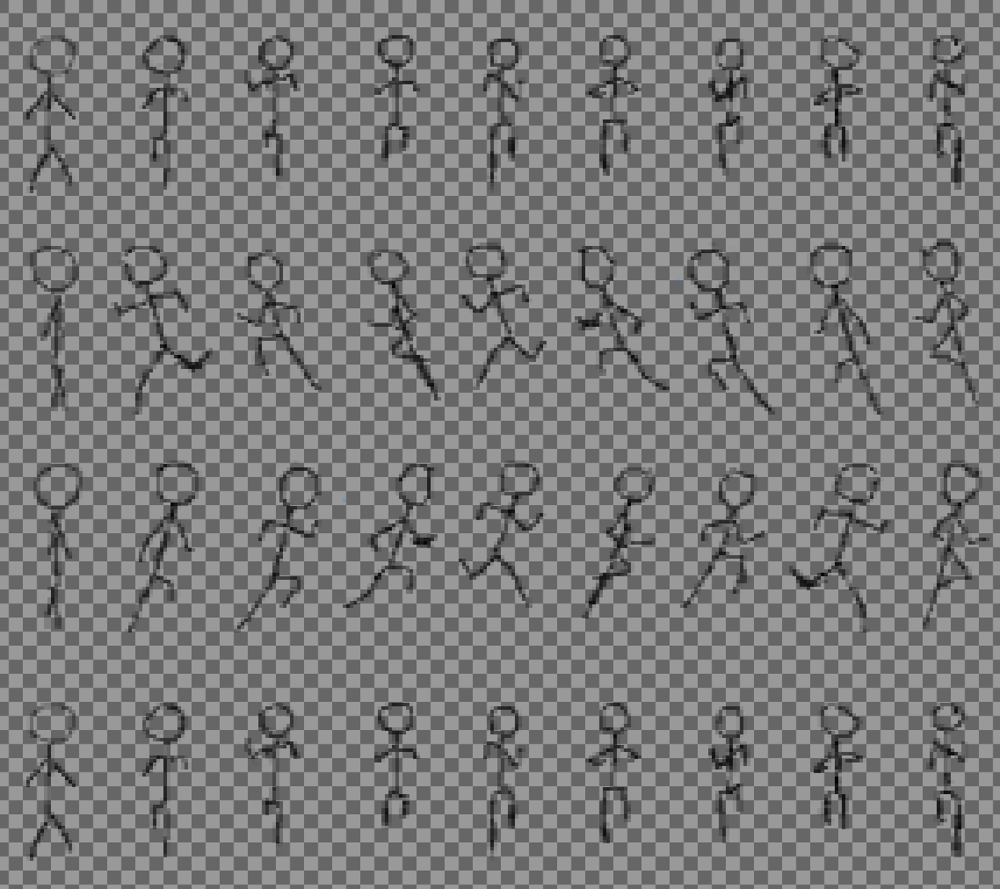

|
Un sprite, ou lutin, est dans le domaine du jeu vidéo un élément graphique qui peut se déplacer sur l'écran. En principe, un sprite est en partie transparent, et il peut être animé (en étant formé de plusieurs images matricielles qui s'affichent les unes après les autres).
Le fond de l'écran constitue généralement le décor et les sprites sont les personnages et les objets qui se déplacent en se superposant au décor de fond.
La classe XamSprite est proposée en complément de la bibliothèque XamGraph version C++, elle est notamment liée à la classe du même nom par agrégation. Le répertoire demo de la bibliothèque contient un programme MyApp montrant un exemple de mise en œuvre des sprites.
Principe de fonctionnement
XamSprite permet de créer un sprite à partir d’un fichier image. Typiquement, l’image représente un motif ou une planche de motifs avec un fond transparent.
Exemple de motif unique (sprite) : 1 ligne, 1 colonne |
|
Exemple de planche de motifs (sprite sheet) : 4 lignes, 9 colonnes |

|
|
Les parties quadrillées représentent ici les pixels transparents.
Dans l’exemple de planche précédent, chacune des lignes est une décomposition du mouvement d’un stickman se déplaçant respectivement vers le haut, vers la gauche, vers la droite et vers le bas. La sélection successive des parties d’une ligne, combinée avec le déplacement de la position d’affichage, donne une bonne illusion du personnage en mouvement…
#include <xamsprite.h>
La clause WITH_XAMSPRITE doit être activée dans le Makefile pour pouvoir bénéficier de cette ressource.
catégories |
liste alphabétique des méthodes publiques |
|
|
||
XamSprite::XamSprite(XamGraph* gr, std::string name = "sprite" ) ; [constructeur]
Ce constructeur reçoit un pointeur vers l’aire de dessin à utiliser. Le deuxième argument permet d’associer un nom au nouveau sprite.
XamSprite::~XamSprite() ; [destructeur]
Destructeur de la classe.
std::string XamSprite::name() const ;
Méthode retournant le nom défini lors de la création de l’objet sprite.
std::string XamSprite::version() ; [static]
Méthode statique fournissant la version courante de XamSprite.
bool XamSprite::loadSheet(const char* fileName, int nRow = 1, int nColumn = 1, bool inCollection = true ) ;
Méthode de chargement d’un fichier image de type BMP, GIF, JPEG, PNG, PNM, TGA, TIFF, XPM… dont le chemin d’accès est spécifié par fileName.
Les arguments nRow et nColumn permettent de spécifier le nombre de lignes et le nombre de colonnes dans le cas où l’image est une planche de motifs.
Le dernier argument n’a de sens que lors de la mise en œuvre de plusieurs sprites simultanément. Il permet éventuellement de ne pas inclure le sprite nouvellement chargé dans la collection, charge alors à l’utilisateur de gérer son affichage individuellement.
La projection d’une collection de sprites tient compte de l’ordre de chargement des motifs : le dernier motif chargé est en arrière plan, les suivants sont superposés jusqu’au premier chargé placé en premier plan.
void XamSprite::setInCollection(bool inCollection = true ) ;
Permet d’inclure ou d’exclure le sprite de la collection dans le cas de la gestion simultanée de plusieurs sprites (voir ci-dessus).
int XamSprite::numRow() const ;
Retourne le nombre de lignes de motifs.
int XamSprite::numColumn() const ;
Retourne le nombre de colonnes de motifs.
void XamSprite::select(int row, int column = -1 ) ;
Dans le cas d’une planche de motifs, permet la sélection de celui situé ligne row et colonne column (les indices commencent à 0). Si la colonne n’est pas spécifiée, elle reste inchangée et seule la ligne est affectée.
Par défaut, le premier motif en haut à gauche est sélectionné.
Sélectionne la colonne suivante de la ligne active dans une planche de motifs.
int XamSprite::currentRow() const ;
Retourne l’indice de la ligne en cours de sélection.
int XamSprite::currentColumn() const ;
Retourne l’indice de la colonne en cours de sélection.
int XamSprite::xSheet() const ;
Retourne l’abscisse du motif courant dans la planche de motifs. Lorsque l’image chargée ne contient qu’un unique motif, l’abscisse est toujours égale à 0.
int XamSprite::ySheet() const ;
Retourne l’ordonnée du motif courant dans la planche de motifs. Lorsque l’image chargée ne contient qu’un unique motif, l’ordonnée est toujours égale à 0.
int XamSprite::width() const ;
Retourne la largeur du motif courant dans la planche de motifs. Lorsque l’image chargée ne contient qu’un unique motif, la largeur est celle de l’image.
int XamSprite::height() const ;
Retourne la hauteur du motif courant dans la planche de motifs. Lorsque l’image chargée ne contient qu’un unique motif, la hauteur est celle de l’image.
void XamSprite::setX(int x ) ;
Fixe l’abscisse d’affichage sur l’aire de dessin agrégée lors de la construction de l’objet sprite.
void XamSprite::setY(int y ) ;
Fixe l’ordonnée d’affichage sur l’aire de dessin agrégée lors de la construction de l’objet sprite.
void XamSprite::setPosition(int x, int y ) ;
Fixe la position d’affichage sur l’aire de dessin agrégée lors de la construction de l’objet sprite.
Retourne l’abscisse courante de positionnement du sprite sur l’aire de dessin agrégée lors de la construction.
Retourne l’ordonnée courante de positionnement du sprite sur l’aire de dessin agrégée lors de la construction.
Dessine le sprite à la position courante sur l’aire de dessin agrégée lors de la construction.
void XamSprite::draw(int x, int y ) ;
Dessine le sprite à la position spécifiée par x et y sur l’aire de dessin agrégée lors de la construction.
void XamSprite::drawCollection() ;
Dessine successivement tous les sprites de la collection, à leur position courante, dans l’ordre inverse des chargement des motifs (le premier motif chargé est placé en avant plan).
void XamSprite::setMove(int dx, int dy ) ;
Fixe la direction de déplacement linéaire du sprite. La proportion entre dx et dy fixe la pente du mouvement. Le sprite est stoppé si les 2 arguments sont nuls.
Le sprite est déplacé de ( dx * speed , dy * speed ) à chaque appel à la méthode de projection, avec speed le coefficient de vitesse (voir ci-dessous).
bool XamSprite::isMoving() const ;
Indique si le sprite est en cours de déplacement.
void XamSprite::setSpeed(float speed ) ;
Permet de spécifier un coefficient de vitesse de déplacement du sprite. Le sprite est stoppé si l’argument est nul.
Le sprite est déplacé de ( dx * speed , dy * speed ) à chaque appel à la méthode de projection, avec ( dx , dy ) les valeurs de la direction du déplacement (voir ci-dessus).
float XamSprite::speed() const ;
Retourne le coefficent de vitesse du sprite (1.0 par défaut).
void XamSprite::seLockedUp(bool lockedUp = true ) ;
Méthode permettant de circonscrire les déplacements du sprite à l’intérieur de l’aire de dessin. Dans le cas contraire, le sprite peut « sortir » de la fenêtre, ce qui est le cas par défaut.
bool XamSprite::isLockedUp() const ;
Indique si le sprite est « enfermé » dans la fenêtre de dessin.
void XamSprite::flip(int flags ) ;
Méthode provocant un effet miroir sur le motif du sprite. Le paramètre flags peut valoir XamSprite::FLIP_HORIZONTAL, XamSprite::FLIP_VERTICAL ou une combinaison des 2.
void XamSprite::turn(int flags ) ;
Méthode provocant une rotation de ± 90° du motif du sprite. Le paramètre flags peut valoir XamSprite::TURN_LEFT ou XamSprite::TURN_RIGHT.
XamSprite documentation HTML – mise à jour : 18/10/2024